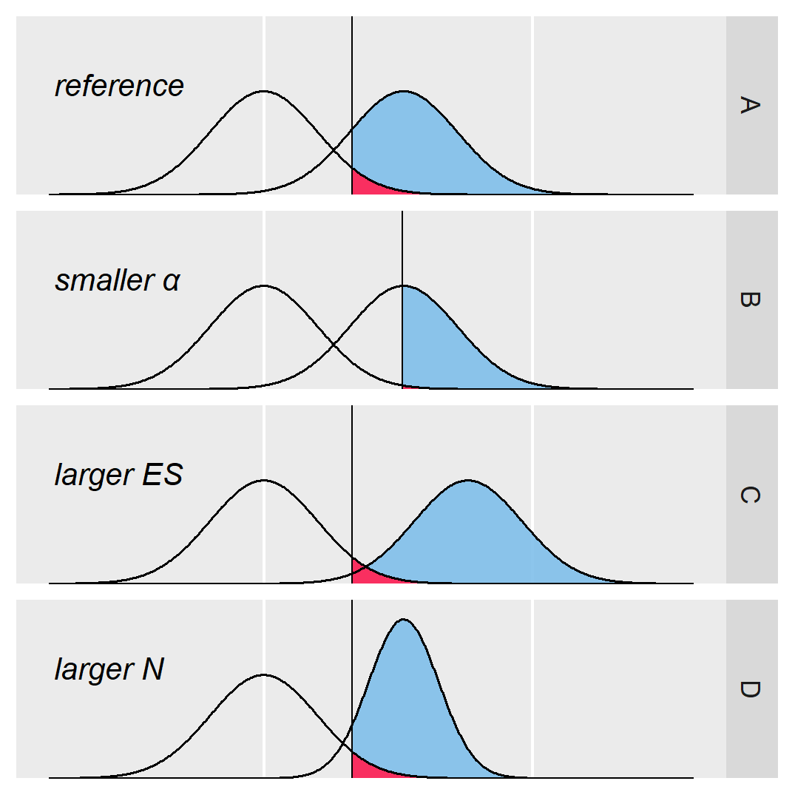

Power is the probability of correctly rejecting the null hypothesis (given that it is false)
Power is closely related to the effect size, \(n\), and \(\alpha\)
These quantities are so related that we can estimate any one from the other three
Power analysis is doing these kind of calculations

Blue = power, red = Type I error rate (α), line = decision criterion
Types of power analysis
A priori: determine \(n\) given others
Useful for planning before a new data collection (primary use)
Sensitivity: determine minimum \(\text{ES}\) given others
Useful when you are unsure of the effect size to expect
Post-hoc: determine power \((1-\beta)\) given others
Not very useful in practice (since your \(\text{ES}\) is based on the data)
Criterion: determine \(\alpha\) given others
Not very useful in practice (since \(\alpha\) is usually fixed anyway)
Power analysis techniques
Analytical power analysis
Solve using equations (easier but less flexible)
e.g., the G*Power program, the {WebPower} package
Simulation-based power analysis
Solve using simulated data (harder but more flexible)
e.g., the Mplus program, the {simr} package
t-test power
A \(t\)-test compares the means of two groups (independent or paired)
To do a priori power analysis, we need an expected effect size
The effect size that WebPower wants you to provide is Cohen’s \(d\)
\[d=\frac{\bar{x}_2 - \bar{x}_1}{s}\]
Best Approach: estimate \(d\) from previous studies
Last Resort: plan to detect a “small” effect \((d=0.2)\)
Example 1
What sample size would provide 80% power to detect an effect of size d=0.3 when comparing two independent groups?
library(WebPower)wp.t(d =0.30,power =0.80,alpha =0.05,type ="two.sample")## Two-sample t-test## ## n d alpha power## 175.3847 0.3 0.05 0.8## ## NOTE: n is number in *each* group## URL: http://psychstat.org/ttest
We would thus need 175 participants in each group (for 350 total)
Example 2
Now, what sample size would provide 80% power to detect an effect of size d=0.5 when comparing two independent groups?
library(WebPower)wp.t(d =0.50,power =0.80,alpha =0.05,type ="two.sample")## Two-sample t-test## ## n d alpha power## 63.76561 0.5 0.05 0.8## ## NOTE: n is number in *each* group## URL: http://psychstat.org/ttest
We need fewer participants to detect a larger (more obvious) effect
Example 3
Now, what sample size would provide 80% power to detect an effect of size d=0.5 when comparing two dependent groups?
library(WebPower)wp.t(d =0.50,power =0.80,alpha =0.05,type ="paired")## Paired t-test## ## n d alpha power## 33.36713 0.5 0.05 0.8## ## NOTE: n is number of *pairs*## URL: http://psychstat.org/ttest
We need fewer participants when each provides repeated measures
One-way ANOVA power
One-way ANOVA compares the means of multiple groups
WebPower wants the \(f\) effect size and \(k\) (the number of groups)
\[f=\frac{\sigma_b}{\sigma_w}\]
Best Approach: estimate \(f\) from previous studies
Last Resort: plan to detect a “small” effect \((f=0.10)\)
Example 1
What sample size would provide 80% power to detect an effect of size f=0.25 when comparing 4 independent groups?
wp.anova(f =0.25,power =0.80,alpha =0.05,k =4)## Power for One-way ANOVA## ## k n f alpha power## 4 178.3971 0.25 0.05 0.8## ## NOTE: n is the total sample size (overall)## URL: http://psychstat.org/anova
We need 178 participants total (45 per group)
Example 2
What sample size would provide 80% power to detect an effect of size f=0.25 when comparing 5 independent groups?
wp.anova(f =0.25,power =0.80,alpha =0.05,k =5)## Power for One-way ANOVA## ## k n f alpha power## 5 195.767 0.25 0.05 0.8## ## NOTE: n is the total sample size (overall)## URL: http://psychstat.org/anova
With more groups, we need fewer participants per group (39)
Linear model power
We technically have two types of power for LM
Both will compare the \(R^2\) values of “full” and “reduced” models
Omnibus power (of the overall model’s \(F\) test)
Full model: Includes all predictors
Reduced model: Excludes all predictors
Targeted power (of specific slopes’ \(t\) tests)
Full model: Includes all predictors
Reduced model: Excludes the targeted predictor(s)
Linear model power
We will use the \(R^2\) values to calculate the \(f^2\) effect size
Now we can calculate the sample size needed in our example
wp.regression(p1 =7,p2 =0,f2 =0.111,alpha =0.05,power =0.80)## Power for multiple regression## ## n p1 p2 f2 alpha power## 136.4757 7 0 0.111 0.05 0.8## ## URL: http://psychstat.org/regression
We need a larger sample with more predictors (but the same \(f^2\))
Targeted example 1
If sex and age explain 20% of the variance in our outcome variable, what sample size would provide 80% power to detect the effect of a third predictor that explains an additional 5%?
Full model has three predictors, so \(p_1=3\) and \(R^2_{\text{full}}=0.25\)
Reduced model has two predictors, so \(p_2=2\) and \(R^2_{\text{red}}=0.20\)